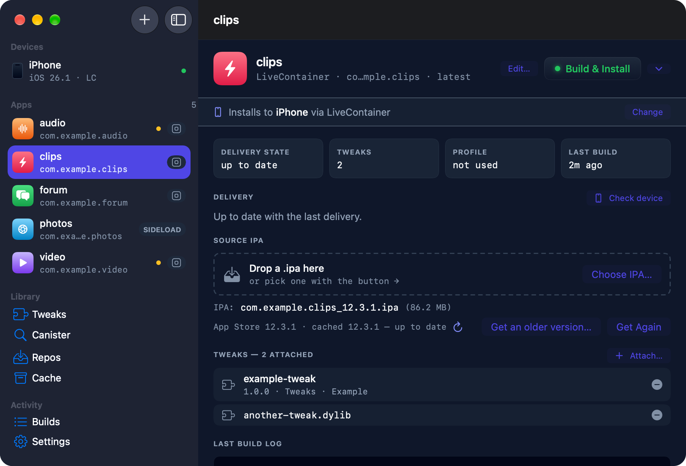

Graft
Put tweaks into the iOS apps you own and install them on your iPhone or iPad, from your Mac, over USB or Wi-Fi. A free Apple ID is enough.
Version 1.1, signed and notarized by Apple. For Apple silicon Macs on macOS 15 or later. Free and open source under the MIT license.

How a build goes
Pick where the app comes from and how it reaches your device.
Get the IPA
Bring a decrypted IPA you already have. Graft checks that its bundle id matches the app, and that every binary in it is decrypted.
Attach tweaks
Search canister.me or add a free APT repo. A package fetched from canister.me is checked against its published SHA-256. Your own
.deband.dylibfiles work too.Build
cyan injects the tweaks. The IPA stays unsigned and keeps its original bundle id, because LiveContainer signs it when you import it. This works with a free Apple ID.
Deliver
Graft pushes it into LiveContainer's Documents over USB or Wi-Fi. Import it in LiveContainer and the tweaks load.
$ graft --add-app https://apps.apple.com/app/id123456789 --delivery livecontainer$ graft --provide-ipa ~/Downloads/Example.ipa --app example$ graft --fetch com.example.sometweak # from canister.me$ graft --attach-tweak some-tweak.deb --app example$ graft example # build and deliverIn the Mac app it's the same build: add the app, drop the IPA on it, attach tweaks, and press Build & Install.
Beyond the build
- Finds LiveContainer
- Uses LiveContainer however it got onto your device: SideStore, AltStore, iloader or Impactor. With a paid account, Graft can also install, update and sign it for you, so guest apps keep their logins. Up to three can sit side by side.
- Keeps tweaks current
- Checks canister.me and your APT repos for newer versions, and updates every app that uses a tweak in one step.
- Rolls back
- Archives builds for each app version, so you can put one you shipped before back on the device without rebuilding.
- Knows what's stale
- Tells you when a device is behind your config, and why: a rebuilt tweak, or a new version of the app.
- Runs builds on your Mac
- Makes a build that also loads under PlayCover on an Apple silicon Mac.
- Scripts cleanly
- Add
--jsonto any command for newline-delimited JSON events. That's how the Mac app talks to it.
Install
The Mac app
Download it, open the zip, and move Graft.app to Applications. The app runs the CLI for everything it does, so install that too.
Download for MacThe CLI
Install it with pipx, then let it set itself up.
$ pipx install git+https://github.com/GreenglassT/Graft$ graft --init$ graft --check--init asks whether you have a paid developer account, copies in your certificate and profile if you do, and finds your device. --check lists any tool that's missing.
You'll need
- A free Apple ID, with LiveContainer on your device. Install it with SideStore, AltStore, iloader or Impactor, which also refresh it every 7 days.
- Or a paid Apple Developer account, with a development certificate and a provisioning profile that includes your device. It adds sideloading apps directly, and lets Graft install and sign LiveContainer for you.
- An Apple silicon Mac. The app needs macOS 15 or later, and the CLI needs Python 3.11 or later.
- An iPhone or iPad paired with that Mac, over USB or Wi-Fi
- cyan, the tool that injects the tweaks. Sideloading with a paid account also needs zsign and libimobiledevice. The README has a one-line install for each, and
graft --checkprints the ones you're missing.
Your apps, your devices
Graft is for apps you've obtained with your own Apple ID, on your own devices. Don't redistribute decrypted or modified IPAs. It ships with no tweaks and no app files, so a fresh install starts empty. When it downloads from the App Store, your Apple ID and licence are stripped from the copy it keeps.
If Graft saved you a weekend of signing errors, you can buy me a coffee.
Tip on Ko-fi